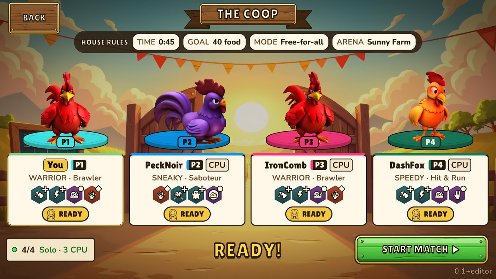
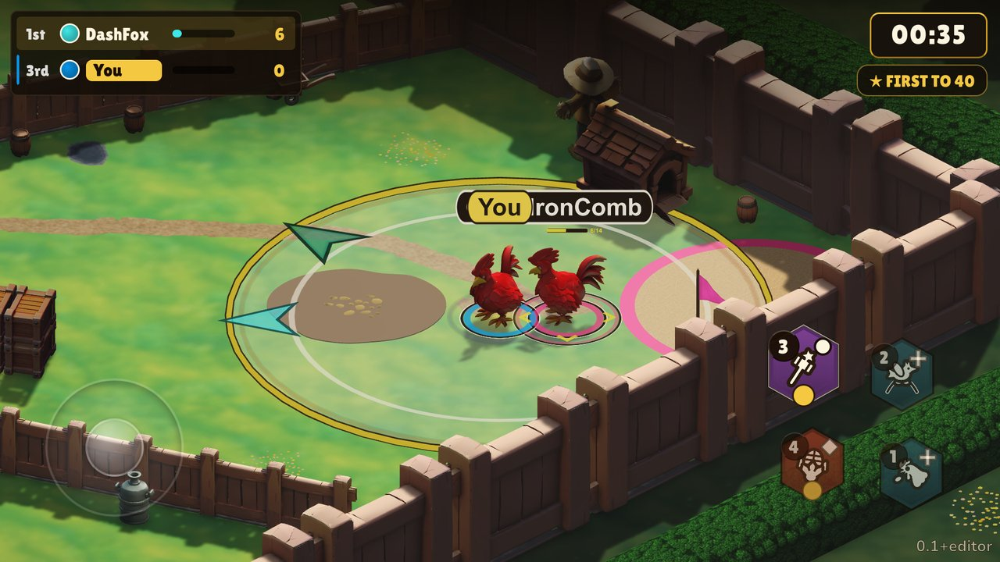

Mechanics
How a match plays, and why the numbers are what they are. Numbers are read from the shipped game data; the reasoning comes from the game design document in the repository.
- Loop and win
- Last 10 seconds
- Solo Clear Time
- Roster
- Steal and control
- Hunt
- Abilities
- Casting
- Piles, walls, jumps
- Open problem
The loop and the win
Each player picks a class and a specialization, which fixes their four abilities, spawns at their base corner and farms the tiered food piles. Food is carried home and deposited at the base, then the trip repeats. On the way, players steal from loaded rivals, control them, and defend their own haul.
The first player to bank 40 food wins at once. If nobody does, the most food banked when the 45 second timer ends wins.
The stored tie-break order is food, then KOs, then the lower corner index. Players are never told a coin flip decided anything. If food is level at the top and KOs do not settle it, the end screen reads "TIED AT THE TOP!" and every tied first-place bird is crowned. If KOs settle it, the banner stays "{name} WINS!" with "Tied 1st · won on KOs".

The last 10 seconds
Once per round, when 10 playable seconds are left (never during the 3-2-1-GO intro), the match authority rolls one of three events. The HUD shows "FINAL 10!" over its name.
| Event | Effect |
|---|---|
| Golden Pile | A 25-food pile appears near the centre. |
| Underdog Surge | The lowest-banked chicken moves ×1.4. |
| Restock | Every pile gets +10, up to its maximum. |
Golden Pile and Restock add food beyond the 140-food budget described below. The design document calls this a deliberate late-match exception. A fourth event, Bounty on the Leader, was removed: the leader is now favoured by the Hunt mark instead.
The Solo Clear Time axiom
The balance rule: a naked chicken (no abilities, no passive), alone on the full map and farming greedily, banks the win target in a fixed time, in a fixed number of base trips. Every class stat is measured against that target instead of tuned by feel. Speedy moves at 12.15, not because it feels right, but because Speedy has to clear in 30 seconds.
| Class | Design target | Trips | Oracle: seconds to 40 | Strategy |
|---|---|---|---|---|
| Speedy | 30 s | 4 | 24.0 to 24.6 | Throughput: many small loads, roams wide |
| Fatty | 30 s | 2 | 19.4 to 20.0 | Payload: one huge sweep, barely returns |
| Warrior | 35 s | 3 | 27.4 to 27.6 | The ability class: mid stats, leans on the kit |
| Sneaky | 40 s | 4 | does not forage | Denial: never farms, robs and executes |
Trips are the win target divided by cargo capacity, rounded up. The design target is the original goal for each class. The Balance Oracle is a pure-C# simulator that plays four-chicken matches on the real map and reports, for every kit, how much food it banks and how fast it reaches 40. It reports and proposes values; it never blocks a change. It is a guide, not a gate: the designer's own tuning is recorded and the oracle learns from it. A kit counts as balanced when it wins 20 to 30 % of mixed four-player matches and the same holds for its class. The match simulator that measures that comes later; today the oracle measures the food economy.
The map holds 140 food, three and a half times the win target, but your own pile plus one contested pile is not enough to win and your own pile plus two contested piles is. Several players could in theory max out by farming alone. That is why combat exists: it buys time, and stealing is the only mechanic that turns a won fight directly into food.
The roster and its specializations
| Class | Move | Cargo | Peck cooldown | Peck cast | Fantasy |
|---|---|---|---|---|---|
| Fatty | 10.125 | 35 | 0.71 s | 0.7 s | "Slow, but it all fits in the beak." |
| Speedy | 12.15 | 10 | 0.71 s | 0.4 s | "If you can't catch me, you can't rob me." |
| Warrior | 10.125 | 14 | 0.79 s | 0.5 s | "The farm is a battlefield." |
| Sneaky | 11.1 | 10 | cannot forage | n/a | "Blink and your food is gone." |
Speedy and Sneaky share cargo, and Sneaky is a little slower (11.1 against 12.15). The real difference: Sneaky cannot forage at all, which is the mechanical reason it denies instead of collecting. Speedy never gets terrain traversal, no jump and no blink, because a fast chicken that can also ignore walls would stop being constrained by the map.
Eight specializations
Each class offers two specializations, chosen once at character select. A specialization grants a permanent passive and a fixed kit of four abilities that is equipped for you. The only differences between kits are their abilities, the class stats and the passive.
| Class | Specialization | Passive | Kit |
|---|---|---|---|
| Warrior | Bully | Every move except Peck recharges 25% faster (Steal 3 s, Stun 5.25 s, Jump 1.5 s) | Peck, Jump, Stun, Steal |
| Warrior | Relentless | Your stuns and slows last 30% longer (Stun 1.69 s, Slow 3.9 s); stuns, getting stuck and timed slows on you end 25% sooner | Peck, Speed, Slow, Steal |
| Speedy | Featherfoot | You bank food 10% faster; immune to the pile slow and the collision slow | Peck, Speed, Slow, Shove |
| Speedy | Slippery | Ability slows on you are 40% weaker and end 40% sooner (Slow Area holds you at 73% while you stand in it). Stuns, pile and bump slows still land in full | Peck, Speed, Slow, Shove |
| Fatty | Bulwark | Knockback cut by 75%; stuns, getting stuck and timed slows end 35% sooner | Peck, Stun, Egg Shell, Shove |
| Fatty | Hoarder | Carries at least 40 food, a full win's worth | Peck, Slow Area, Egg Shell, Steal |
| Sneaky | Spoiler | His Hunt picks the leader (most food banked) twice as often; carries at least 30 food | Hunt, Jump, Hide, Stun |
| Sneaky | Thief | A steal on his marked rival adds 10 new food; carries at least 15 food; banks 20 bonus food if the clock expires with no winner | Steal, Jump, Hide, Slow Area |
Fixed kits are a balance baseline to iterate on, not a final roster. A switch brings back free picking.
Kits are listed in slot order, and the order is a rule. Slot 1 is the income move (Peck; Hunt for the Spoiler, Steal for the Thief), slot 2 is movement (the Fatty's second attack instead), slot 3 is the flex move (defence, self utility or a second attack, the least used) and slot 4 is the main attack, the combo partner of slot 1.
Steal and control
All chicken-to-chicken interaction is steal or control. There is no basic attack. A steal moves cargo directly from victim to thief; nothing drops on the floor. The amount is capped three ways:
stolen = min(steal value, free space, defender cargo) // never negativeA loaded thief has no free space, so it cannot steal. Theft is a rhythm of steal, bank, return, not a drain. A steal-proof bird (an Egg Shell egg) refuses every steal, so the formula never runs against it.
The Thief has one more rule, his loot mark. While a round runs, one rival at a time carries it, drawn by lottery (more likely the more food he has banked or carries, with a plus above 25). A steal that reaches that rival takes its food as usual and then adds 10 new food, both into the Thief's ordinary cargo and each held to its free room; what does not fit is lost. A shell or a base wall refuses it and the mark stays. The next mark appears a second before Steal is ready again, and a mark older than 12 s moves on while Steal is on cooldown. Only the Thief has a mark; a Steal cast by any other kit is unchanged. At the clock, with nobody at the target, the Thief banks 20 bonus food before the winner is picked (the Spoiler no longer does).
What each player sees of the loot mark: only the Thief and the marked rival see anything, and the picture is a bag of coins, never a crown. The Thief gets a coin-bag marker on the marked rival (on that rival's arrow while it is outside the circle of arrows round his bird, over its head inside the circle), gold brackets on the ground while the rival is inside Steal's reach (grey when a base wall or an egg shell stops the steal), a dot on the Steal button that fills while the next mark is coming and turns solid gold a second before Steal is ready, and a LOOT +10 pop with a strong buzz when a marked steal pays. A hidden rival hides the bag. The marked rival gets a coin-bag badge reading LOOT over its own name, a MARKED! pop with a short buzz when the mark lands, and a bag on the Thief's arrow. Everyone else sees nothing, and the clock prize has no effect of its own. The bag is a placeholder drawing until the 2D artist makes one.
Worked examples:
| Steal value | Thief free space | Defender cargo | Stolen |
|---|---|---|---|
| 6 | 10 | 4 | 4 |
| 6 | 3 | 20 | 3 |
| 6 | 0 | 20 | 0 (a loaded thief) |
The control ladder
| State | Move | Cast abilities | Collect | Source |
|---|---|---|---|---|
| Slowed | reduced | yes | yes | collision, pile, Slow, Slow Area |
| Stuck | no | yes | no | none in the current 11 |
| Stunned | no | no | no | the Stun ability (1.3 s) |
Stun is the only state that locks casting. That is exactly why it is the qualifier for the Assassin's execute. The Egg Shell egg is immune to the whole ladder, while the Egg Shell walk is immune to ability slows only; steal-proofing is separate and only stops cargo being taken. A Relentless caster lengthens the stuns and slows it applies by 30% (a Relentless stun lasts 1.69 s), applied before the victim's own shortening; roots and placed zones are not lengthened.
Hunt: one button, two presses
The Assassin's execute (shown as Hunt; its internal name is Death Mark) is the only hard removal in the game. Only the Spoiler, one of the two Sneaky specializations, has it, in the first of the four ability slots. The press marks a rival anywhere on the map for 5 s, picked at random but likelier the farther it is from its own base and, softly, from the Assassin, and likelier again for the rival with the most banked food; the Assassin must find it, stun it and press again within 6.2 m, in the last 2 seconds of the mark. Each round opens with Hunt on a 4 s cooldown. No ability crosses a claimed base wall, so a bird at home cannot be reached and the mark can run out.
| Stage | Condition | Counterplay |
|---|---|---|
| Mark | First press marks a living rival anywhere on the map, likelier one far from its own base or banked high. The target can see the mark. | Reach your base in time: no ability crosses a base wall. |
| Hunt | The Assassin has 5 seconds to find it and close in. The mark arms after 3 s: a Kill is only possible in the last 2.0 s. | Escape: stay out of reach until the timer runs out, or walk home (a victim within about 21 to 29 m of home is safe). |
| Stun | The marked target must be stunned when the Kill lands, from any source (a stun that began before the arm and is still running counts). Stun lasts 1.3 s (Slippery too), 0.845 s on Bulwark. | Don't get stunned. |
| Kill | Press again in the last 2 seconds, within 6.2 m, while the target is stunned, not shelled, and the Assassin is not stunned. | — |
No isolation: the mark ignores crowds. The only defences are not being stunned, escaping, and reaching your base in time. An Egg Shell's egg (the last 2 of its 3 seconds) makes you unkillable and unstunnable; its first-second walk does not. Stun reach (5.4 m) plus kill range (6.2 m) is 11.6 m.
On success the victim's whole cargo plus a flat 15 food bounty, the same for every victim, goes into the Assassin's ordinary cargo, the victim's food first and then the bounty into the room left. The Spoiler's beak holds 30, so what does not fit is not gained (and the victim is emptied all the same: a Fatty's whole beak is more than he can carry). Since it is ordinary cargo it can be stolen like any other load and must be walked home. The victim is out for 3 seconds, then respawns at its own base with no cargo; its cooldowns keep running. If the execute fails, Hunt takes a reduced cooldown (4 s) so the Assassin can re-mark quickly; after a kill it is 8 s, so a round holds at most four kills.
What each player sees: the Assassin gets one marker in the target's own colour, holding the count (3, 2, 1 while the mark arms, then 2, 1 and tenths in the live window), a draining ring, the paw, a badge for what still blocks the kill (a star when the target is not stunned, a lock behind its base wall, an egg when shelled) and the distance, which turns into a red pill beyond 6.2 m. While the target is outside the circle of rival arrows round the Assassin's own bird, the marker rides on that target's arrow, which grows and takes the mark's colour; inside the circle it sits by the target's head. Brackets on the ground frame the target whenever it is in view. The Hunt button mirrors all of it (the target's colour dot, the draining ring, the count, the blocker badge) and turns into a big yellow POUNCE with the tenths exactly while a kill is possible. There is a skull on the target's standings row, a HUNT! pop over the Assassin the moment the kill goes live, a buzz at that moment and a stronger one when the kill becomes possible, and the word MISSED or SAFE if the hunt ends without a kill. The edge of the Assassin's screen follows the hunt as well: dark while the mark arms, red in the live window while the kill is blocked, yellow while the kill is possible; the middle of the screen stays clear. While a mark tints a screen, the two birds of that hunt (the Assassin and its target) keep their true colours on it, so they stand out from every other chicken; a hidden bird is never given away by this. The marked player gets a MARKED! warning, a darkened screen for as long as the mark lasts, a clock pill reading LIVE IN 3s, 2s, 1s while the mark arms and then a red, pulsing LIVE 2s and LIVE 1s, and a skull on the Assassin's arrow; when the Assassin is close the darkness turns cold violet. Everyone else sees only the skull on the standings, which turns red and pulses when the mark goes live. A sting plays at the arm for each role.
The 11 abilities
Simplified on 2026-11-05: one ability per job, with plain names. Every targeted ability hits every rival within its radius of you, by distance only: there is no cone and no aiming at a single rival. Nineteen older moves are retired (Quick Drop's banking bonus is now a permanent Featherfoot passive). Each player has four active slots, filled by the kit of the chosen specialization. Cooldowns are the shipped values, before passives.
| Ability | Cooldown | Effect |
|---|---|---|
| Steal Everyone | 4 s | Robs 5 food from every rival within 5.2 m. No knockback. |
| Stun Everyone | 7 s | Stuns every rival within 5.4 m for 1.3 s. |
| Shove Everyone | 5 s | Shoves every rival within 5.4 m away. |
| Slow Everyone | 6 s | Slows every rival within 6.48 m to 55% speed for 3 s. |
| Slow Area Everyone | 7 s | For 5 s, every rival within 6.48 m of you moves at 55% speed while it stays inside. |
| Speed Everyone | 4 s | A 1.5 s sprint at 1.3× movement speed. |
| Egg Shell Everyone | 8 s | Walk, then egg, on one press. First second: walk at half speed and slows (Slow Area included) do not work, but a stun, a shove, a steal or a kill still lands. Then an egg for 2 s that starts by itself: you cannot move, and nobody can rob, kill, stun, slow or shove you. Press again to stop; using another move ends the egg. Cooldown from the cast. |
| Hide Everyone | 4.5 s | Fades you to a ghostly outline for 2 s. Using a move breaks it. |
| Jump Not Speedy | 2 s | A quick dash forward, straight over walls (3× speed for 0.18 s: about 6 m for Sneaky, 5.5 m for Warrior). |
| Peck Pre-equipped | 0.8 s | A cast of 0.4 to 0.7 s by class (Speedy 0.4, Warrior 0.5, Fatty 0.7): you are rooted, and the beakful is taken when it ends. A stun, a shove, an execution or your own next move cuts it and takes nothing; a slow or being robbed does not. Forced for every forager. |
| Hunt Spoiler | 4 / 8 s | The execute. Marks a rival anywhere for 5 s, likelier far from home and from you; it goes live after 3 s, so the Kill is in the last 2 seconds. Cooldown 4 s after a miss, 8 s after a kill. Within 6.2 m, stun them, then press again to take everything they carry. Starts each round on a 4 s cooldown. |
Cooldown tiers
| Tier | Range | Abilities |
|---|---|---|
| Low | 1 to 3 s | Jump |
| Medium | 4 to 6 s | Steal, Speed, Hide, Shove, Slow, Hunt after a miss |
| High | 7 to 8 s | Stun, Slow Area, Egg Shell, Hunt after a kill |
Shortened on 2026-11-05 so a 45 s match stays busy. The High band holds the immunity move (Egg Shell) and the one hard stun (Stun, which also sets up a Hunt kill). Peck is foraging cadence set by the Solo Clear Time axiom, not a tiered move.
Hold to preview, release to use
An ability always fires on release, never on press. The moment you press, your own screen shows the move's true area on the ground and marks every chicken inside it. What is marked is exactly what gets hit: with range-only targeting that is every rival inside a circle around you.
Past about 125 ms the hold becomes a commitment. Rivals see a wind-up glow at your feet, though not your area, and you keep moving at full speed. Nothing aims: no device has an aim control, so a move fires along your facing, or at the soft-lock target on touch.
Having no target is not illegal. A move that needs a rival and finds none shows a cream dashed ring. Release it anyway and it fizzles: no effect, no cooldown, and the slot re-arms after 0.4 s so it cannot be spammed. A held move can be cancelled without firing or costing its cooldown: drag to the screen edge on touch, Esc or right mouse button on keyboard and mouse, L3 (click the left stick) on a gamepad.
Controls
- Touch. Slot 1 sits in the corner under the thumb. Slots 2 and 4 are mirror images across the diagonal through slot 1, a little off the axes, and slot 3 sits on that diagonal, furthest out. Portrait uses a plain 2 × 2 grid.
- Gamepad. Left stick moves, the right stick does nothing. A, Y, B and X fire slots 1 to 4, and so do RB, RT, LB and LT. L3 cancels a hold. Start opens the Leave sheet. B backs out of menus, the sheet and the podium only; in a match it is just slot 3.
- Keyboard, scheme A (default): WASD moves; the arrows Down, Up, Right and Left fire slots 1 to 4.
- Keyboard, scheme B: the arrows move; Q, W, R and E fire slots 1 to 4. The choice is a Settings row.
- Digits 1 to 4 fire the slots in both schemes. Esc or the right mouse button cancels.
- Peck is the exception to hold-and-release. A tap pecks. Holding the Peck slot for 0.5 s toggles Auto-Peck, and an AUTO tag shows on the hex while it is on.
- Peck is a cast. A tap starts a cast of 0.4 s (Speedy), 0.5 s (Warrior) or 0.7 s (Fatty) and roots you; the food is taken when it ends. A stun, a shove, an execution or your own next move cuts it and nothing is taken, while the cooldown is still spent; so does a pile another chicken empties before your cast ends. A slow or being robbed does not cut it.
- Superseded design (design note, 2026-11-21). Peck used to take its food at the press and then lock movement for 0.4 s. That rule is gone: the food now comes at the end of the cast.

Piles, walls and jumps
Tiered piles
| Tier | Piles | Food each | Total | Role |
|---|---|---|---|---|
| T1 doorstep | 4 | 10 | 40 | Safe income near your base |
| T2 contested | 4 | 15 | 60 | Equidistant from two bases |
| T3 centre | 1 | 40 | 40 | The prize |
That is 140 food in total. The amounts are match data that a balance update can change. Piles do not respawn, so banked food leaves circulation and the pot visibly shrinks as the match goes on.
Walls
Eight radial walls divide the arena into eight 45 degree sectors, alternating between base sectors and neutral sectors. Each wall has exactly one opening, at one end. The pattern repeats four times, so every player's sector is identical. From your base, the left route is the safe lap: out to the rim, along the edge, past a contested pile. The right route is the risky lap: in past the centre pile.
Jumps
Every jump is a teleport, and there are no obstacle height classes. A jump clears an obstacle only if its length beats the obstacle's span plus 0.8 m of body clearance. A jump that falls short stops flush against the near face, and the cooldown is still spent.
Jumps come in a ladder of lengths. The shortest closes the gap over a wall, a longer one vaults a pile, and only the longest crosses a full centre pile. The tier lengths are still being tuned, so this page does not list them.
The centre pile shrinks as it empties, and since span is the only thing gating a jump, the map opens up in stages. A full pile is a fortress that only the longest jump crosses. As it shrinks, shorter jumps can cross it, and a nearly empty pile blocks nothing. The prize everyone is fighting over is also the wall protecting it, so the arena dissolves as the match converges.
An open problem
The arena is too big for four players in 45 seconds. In play, four chickens rarely run into each other, so a whole match can pass in parallel: everyone farms, everyone banks. The control and steal systems that the v0.4 redesign exists to serve go unexercised. The design document marks this as known, accepted for now, and something that must be solved before the map is called done.
The levers it lists, none chosen yet:
- Shrink the arena. Cheapest, but every spatial constant derives from its size, and shrinking alone shortens Solo Clear Time unless speeds come down too.
- Pull the objectives inward, so routes overlap sooner.
- Raise the player count. The arena may simply be sized for more players, but that changes the free-for-all maths and the win target.
- Add interior geometry that funnels traffic through shared corridors.
The design document's reason for waiting: it is not yet known whether the encounter rate is wrong or the readability of encounters is, and guessing costs a re-solve of every derived constant. This is the first question a human playtest has to answer.